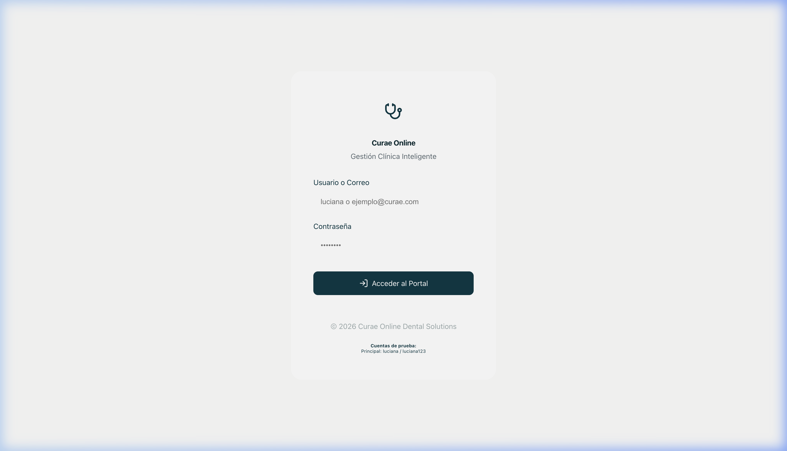
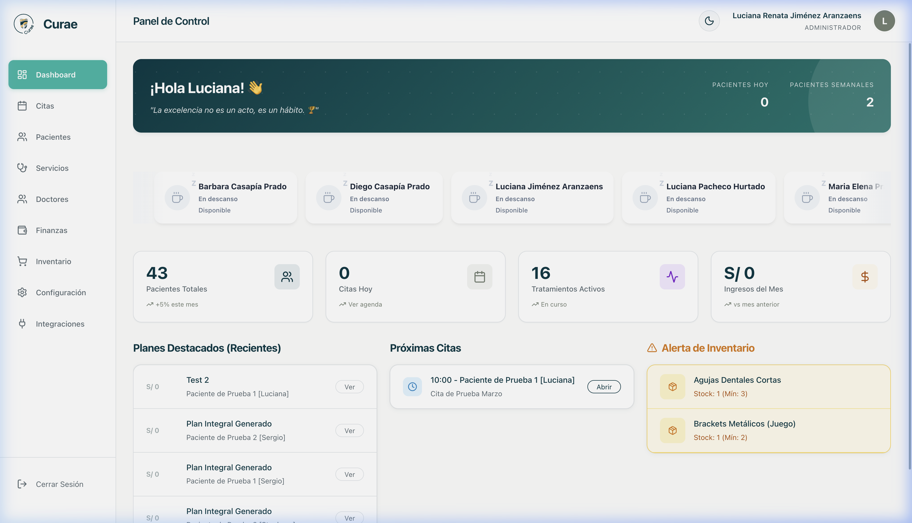
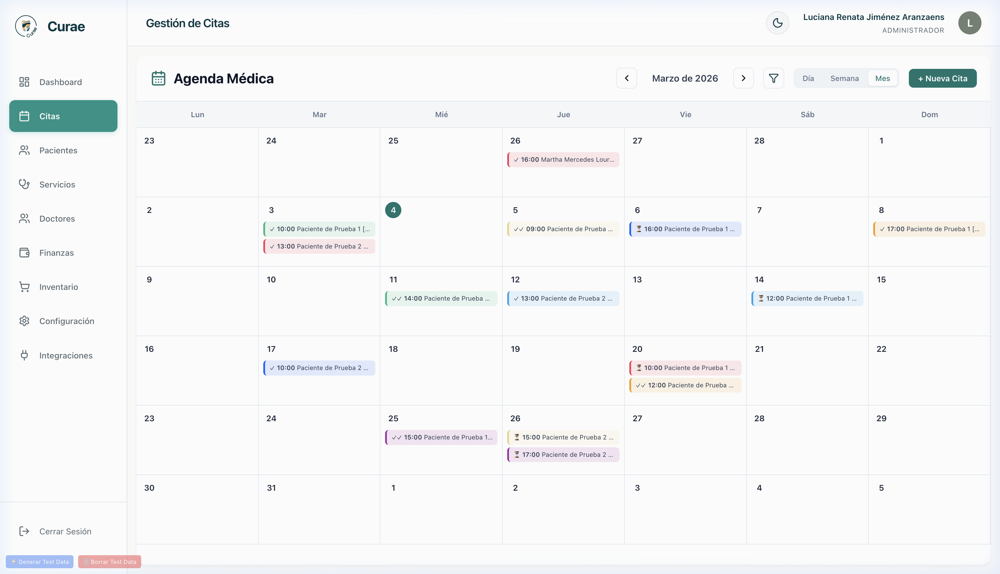
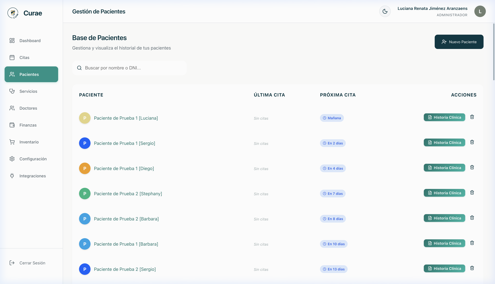
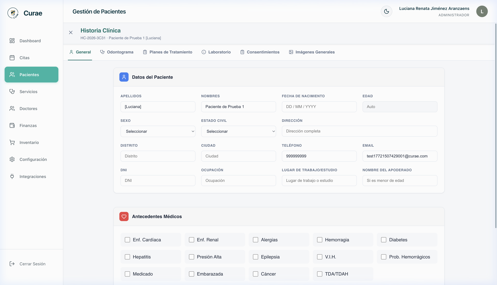
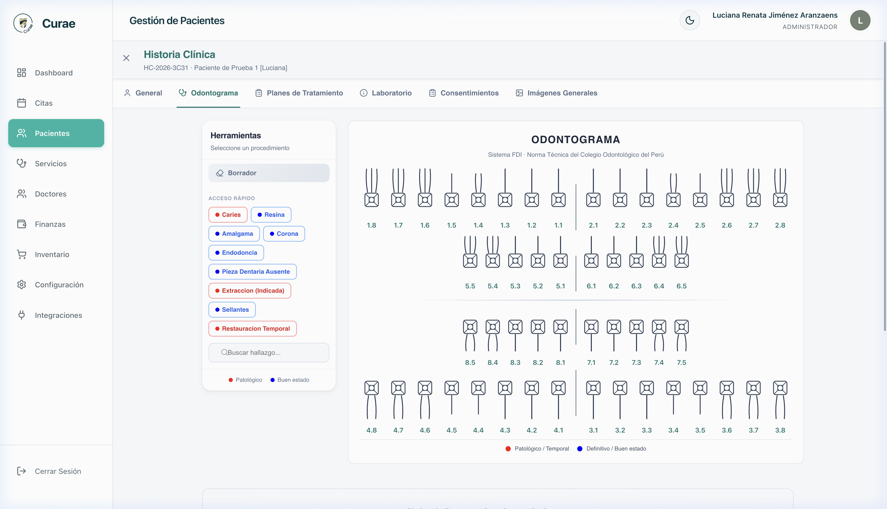
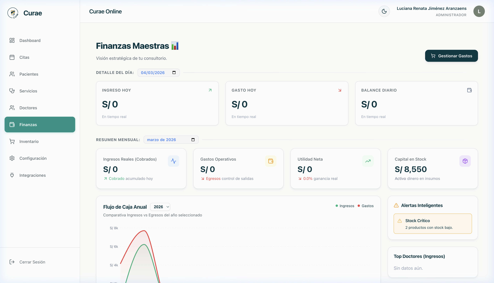
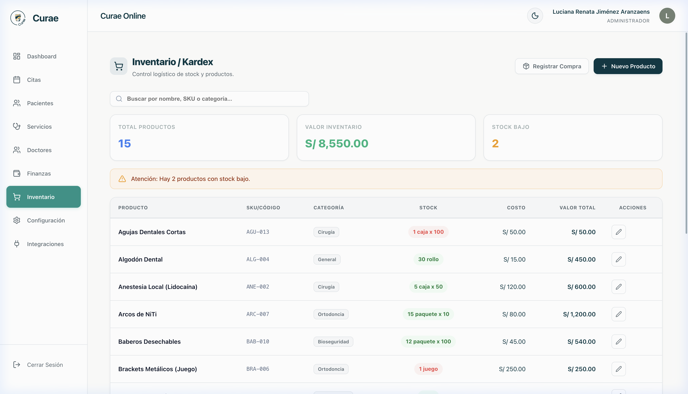
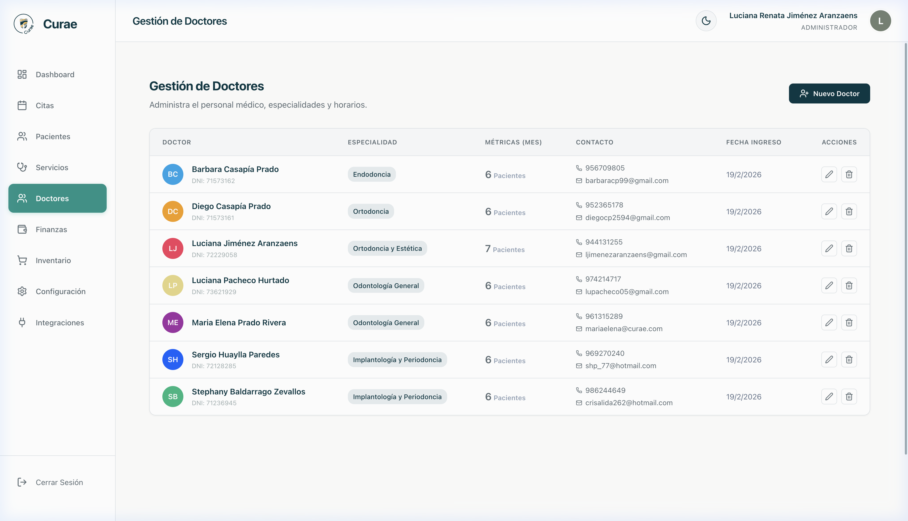

Accede fácil y rápido a tu plataforma de gestión dental.

El centro de control de tu clínica.

Un calendario interactivo para no perder ninguna consulta.

Toda la información de tus pacientes en un solo lugar.

Gestiona los antecedentes y tratamientos.

Mapa dental detallado y fácil de usar.

Mantén las cuentas claras.

Que nunca falten materiales en el consultorio.

Administra al equipo de la clínica.
